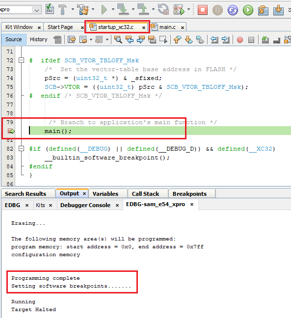

The UART, I2C and CAN bootloaders for CORTEX-M based MCU's are designed to run from SRAM to support
Simultaneous Flash memory write and reception of the next block of data
Self update

For debugging these bootloaders make use of software breakpoints instead of Hardware breakpoints
Steps to enable software breakpoints and start debugging
Enable software breakpoint from the project configuration dashboard by clicking on the button as shown below

Software breakpoints inside main() when running from SRAM do not work when set before starting the debugger.
For them to work first set a Breakpoint in startup_xc32.c file as it is running from flash

Start the debugger from MPLAB IDE and the software break point in startup file will be hit

Once the breakpoint is hit in startup file, then set breakpoints anywhere you want, like in main() function as shown below

Resume the debugger and you should be able to now debug as usual